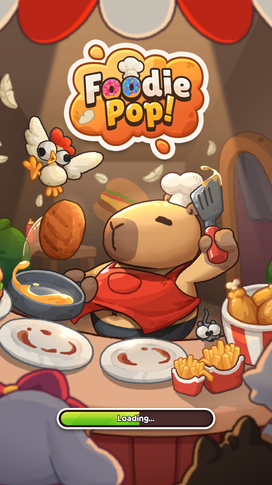
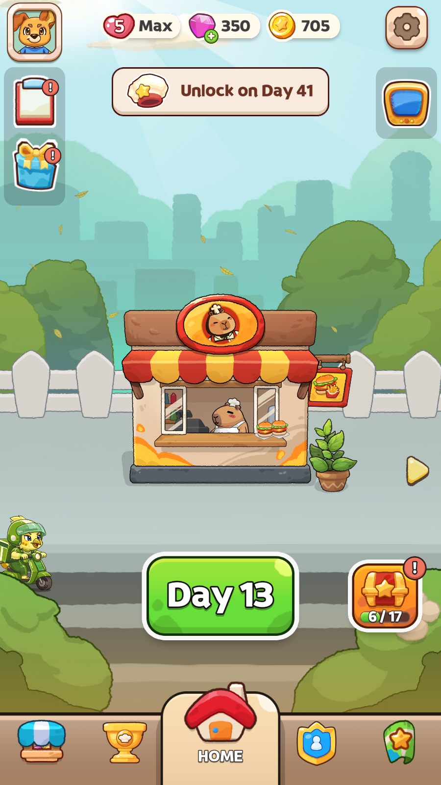
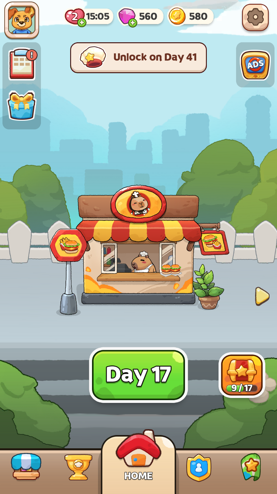

Khởi động, quyền riêng tư & Play Games
Mô tả
- Bản 1.15 vào game qua một chuỗi boot cố định: scene
Boot→ nạpInitManagers(save, Firebase, quảng cáo, Remote Config, R1) → màn Loading có logo → Home hoặc thẳng vào level. - Người chơi mới vào thẳng Day 1 và chơi liền tới Day 7; từ Day 8 trở đi mỗi lần boot mới ra Home (
UIFlowPolicy.SkipHomeAtBoot,firstLvOutHome = 8). Giống 1.11. - Quyền riêng tư:
consent_configmặc địnhmode 0(không hiện form UMP) và server live không đổi, nên người chơi không gặp hộp thoại consent; code có sẵn 2 chế độ (MAX + AdMob, chỉ AdMob) và nút Privacy Options (MAX CMP) khi khả dụng. - Google Play Games chỉ dùng để lấy định danh cho server (
SocialAuth.SignInGooglePlayGames, timeout 10 giây); save thật 16/11 dùng định danh thiết bị (authKind= DEI). LớpPlatformServiceManagers(đăng nhập + cloud save của Play Games) không có trong scene nào của 1.15. - Phiên bản mới: popup cập nhật store do Remote Config
new_version_popup(live: 1.17,isShow0,forceUpdate0) nên chưa hiện; chi tiết ở trang Settings.
Thiết kế chi tiết
Tóm tắt thiết kế
- Code Boot do
BootGameCookOrder.IEBootSequenceđiều phối; quyết định vào level hay Home nằm ởLastSetupBeforePlayquaUIFlowPolicy.SkipHomeAtBoot. - APK
firstLvOutHome = 8,intervalOutHome = 1,initHardRw = 900: người mới chơi liền 7 level không qua Home, tặng 900 gem. - Playtest Máy test ở Day 13 vào Home ngay sau Loading, không popup chen vào lúc load.
- APK
consent_configmode 0: không có form UMP; nút Privacy Options có trong prefab nhưng đang tắt. - Code Play Games dùng để lấy định danh server (timeout 10 s, rơi về ID thiết bị); đăng nhập + cloud save kiểu Play Services không được khởi tạo.
- Nhận định Cắt Home khỏi 7 level đầu giúp đưa người chơi vào gameplay nhanh nhất có thể; Home chỉ xuất hiện khi đã có thứ để làm (nâng cấp, quà).
Luồng người chơi từng bước
- Mở app, màn LoadingGiao diện PlaytestLogo Foodie Pop! và thanh Loading hiện trong lúc nạp InitManagers.

Màn Loading: logo Foodie Pop! và thanh "Loading..." (capybara đầu bếp) - Nạp manager và saveHệ thống Code
GameSystemInitializerđọc 3 file save,IapAdsSystemInitializerbật Firebase / ads,R1Bootnạp R1. - Chọn đích đếnHệ thống Code
SkipHomeAtBoot: map 0 và level + 1 < 8 → vào level; ngược lại tải sceneNewHome. - Home hiệnGiao diện PlaytestDay 13: Home hiện ngay, không popup.

Home sau khi load (Day 13): tim 5 Max, 350 gem, 705 coin, nút Day 13, rương 6/17 - Mở lại sau sự cốNgười chơi PlaytestForce-stop do quảng cáo treo, mở lại vẫn đúng Day 17.

Mở lại sau force-stop ở Day 17: tiến độ giữ nguyên (nút Day 17, gem 560, coin 580)


Chuỗi boot theo thứ tự
| Bước | Thành phần | Việc làm | Bằng chứng |
|---|---|---|---|
| 1 | BootGameCookOrder | Tắt sleep, DeviceTier, FPS đã lưu, transition Loading | Code |
| 2 | IapAdsGlobalConfig.ConfigProfile | Profile release / test, so version Remote Config | Code |
| 3 | RemoteConfigOverrideAuthorSelector | Chọn author default (không hiện UI) | Code |
| 4 | InitManagers (scene) | Database, Data-LevelProgress, Data-Profile, Data-LiveOps, LiveOps, IAP, Ads, Notification, VersionCheck, UpdateCheck, Firebase, Manager-RemoteConfigData | APK |
| 5 | GameSystemInitializer | Nạp save, khôi phục dở dang, khởi tạo LiveOps | Code |
| 6 | CakeLocalization | Nạp ngôn ngữ theo máy (selected-locale) | Code |
| 7 | IapAdsSystemInitializer | Firebase, AdsManager (consent), AppsFlyer, TikTok | Code |
| 8 | R1Boot | Nạp R1Plugin/Managers, kết nối server | Code |
| 9 | LastSetupBeforePlay | SkipHomeAtBoot → PlayLevel hoặc LoadHome | Code |
Tên object trong InitManagers lấy từ m_Name của scene.
Quy tắc vào Home / level
| Tình huống | Kết quả | Nguồn |
|---|---|---|
| Boot, map 0, Day hiện tại ≤ 7 | Vào thẳng level | UIFlowPolicy.SkipHomeAtBoot |
| Boot, Day ≥ 8 hoặc map khác | Vào Home | UIFlowPolicy.SkipHomeAtBoot |
| Thắng level 8 (map đầu) | Về Home | UIFlowPolicy.GoHomeAfterNext |
| Thắng level > 8 | Về Home mỗi level (interval = 1) | UIFlowPolicy.GoHomeAfterNext |
| Thắng level < 8 | Sang thẳng level kế | UIFlowPolicy.GoHomeAfterNext |
| Vào map ≥ 2 khi campaign yêu cầu mạng | Chặn nếu offline | UIFlowPolicy.RequiresInternet |
Giá trị mặc định APK; live 16/11 không ghi đè progress_scenario.
Khác biệt so với 1.11
| Mục | 1.11 | 1.15 |
|---|---|---|
| Vào thẳng level / Home | Day 1 thẳng, Home từ Day 8 (theo ghi chú 1.11) | Giống: firstLvOutHome 8, kiểm lại bằng UIFlowPolicy.SkipHomeAtBoot |
| Save lên server (Save Progress) | Chưa thấy trong SAVE_MODEL.md 1.11 (suy luận: chỉ có file local + R1) | Có: SaveGameManager / SaveGameCodec (xem SaveSystem) |
| Cloud save Play Games | Không ghi nhận | Có code (PlatformServiceManagers) nhưng không nằm trong scene nào |
Cột 1.11 theo tài liệu 1.11 (gợi ý, không kiểm lại pseudo-C 1.11).
Vận dụng cho game khác
- Cho người chơi mới vào thẳng level đầu và chỉ mở Home sau vài level để họ thấy vòng chơi trước khi gặp menu.
- Đặt "Day đầu ra Home" và "khoảng ra Home" thành 2 con số trong Remote Config để tinh chỉnh nhịp onboarding mà không build lại.
- Mặc định không hiện form consent, chỉ hiện khi cần (theo cờ server / vùng) để tránh làm mất người chơi ở phút đầu.
Bảng tổng hợp mọi tính năng đã làm chi tiết: FoodiePop_ThietKeChiTiet.xlsx.
Mở khóa & điểm vào
Luôn chạy. Vào thẳng level (bỏ qua Home) khi UIFlowPolicy.SkipHomeAtBoot = true: map đầu tiên, Day hiện tại + 1 < firstLvOutHome (progress_scenario = 8) và _isSkipHomeOnFirstDay = 1 (Boot.unity).
Điểm vào:
- Mở app: Unity load scene Boot (BootGameCookOrder.Awake/Start → IEBootSequence)
- Scene InitManagers (nạp bằng tên
_sceneSetUpManagers), scene SceneLoadingBuffer (SceneLoader) - Settings → Save Progress (nút Privacy hiện bị tắt trong prefab)
- Mở lại app sau khi bị force-stop: cùng chuỗi boot, tiến độ giữ nguyên (Playtest Day 17)
Cách hoạt động
BootGameCookOrder.IEBootSequencetắt chế độ ngủ màn hình,DeviceTier.DetectAndCache,GameFrameRate.ApplySaved, hiện transition Loading (SceneLoader.ShowTransitionWithoutLoadScene).- Dựng
IapAdsGlobalConfig.ConfigProfiletheo build (release: tracking bật, Remote Config cache 3 600 s) và soRemoteConfigAppVersionvớiApplication.version(khác → cache 0). - Chọn author level
default(không hiện bộ chọn dataset) → bước 6 của RemoteConfig. - Nạp scene
InitManagers(database, save, LiveOps, IAP, ads, Firebase, Notification...), gọiCrashlyticStateControl.SetBootSteptừng bước: loaded_game_managers → loaded_sys_data → loaded_ads_sys. GameSystemInitializer: đọc 3 file save (progress / profile / liveops),ResumePendingRestore,LiveOpsManager.Initialize; song songCakeLocalization.InitializeAsync.IapAdsSystemInitializer: Firebase (có timeout),AdsManager.SetUp(consent theoconsent_config), AppsFlyer, TikTok (nếu có credentials), kiểm tra bản mới nhất.R1Boot.StartAsyncchờ lõi sẵn sàng, kiểmr1plugin_enable, nạp AddressableR1Plugin/Managers, rồiStartNetwork→ABIServerAPI.InitConnection(định danh server).LastSetupBeforePlayđồng bộ tiến độ nội dung, hỏiSkipHomeAtBoot: true →LevelPlayLoadAndSetupControl.PlayLevel(vào thẳng level); false →CakeOrderSceneLoader.LoadHome(sceneNewHome).
Ảnh chụp
Bấm ảnh để phóng to, dùng phím ← → để chuyển ảnh. Nhãn màu cho biết nguồn bằng chứng của ảnh.
Phần thưởng
| Ngữ cảnh | Phần thưởng | Evidence |
|---|---|---|
| Tặng khởi đầu | 900 gem (initHardRw) khi tạo dữ liệu mới | GameProgressScenario.IEApplyInitCurrency |
Số liệu chính
| Chỉ số | Giá trị | Nguồn |
|---|---|---|
| Day đầu tiên ra Home khi boot | 8 (Day 1-7 vào thẳng level) | progress_scenario.firstLvOutHome |
| Khoảng ra Home sau Day 8 | mỗi level (intervalOutHome = 1) | progress_scenario |
| Gem khởi đầu | 900 | progress_scenario.initHardRw |
| Chờ Remote Config | 4 giây | InitManagers.unity |
| Timeout Play Games | 10 giây | SocialAuth.SignInTimeoutSeconds |
| Chế độ consent | 0 (không hiện form) | consent_config |
| Số scene khởi động | Boot, InitManagers, SceneLoadingBuffer, NewHome (+ GameplayHUD, Miniscene) | Assets/_Production/Map-common_assets/Scenes |
Use case (10)
Bấm vào từng use case để mở. Mở/đóng tất cả
UC-01 Mở app lần đầu: vào thẳng Day 1
Các bước- Boot dựng dữ liệu mới (log "No save file found. Creating new data.")
- Tặng 900 gem khởi đầu (progress_scenario.initHardRw, flag claimed_init_hard_currency)
- LastSetupBeforePlay: highestMapIndex 0, level 0 → SkipHomeAtBoot = true
- PlayLevel vào thẳng level 1, không qua Home
| Actor | Player |
|---|---|
| Trigger | Cài mới, mở app |
| Điều kiện | Chưa có progress.dat |
| Kết quả | Không có màn menu trước level đầu |
| Quy tắc / số liệu | Điều kiện: highestMapIndex == 0 && skipEnabled && highestLevelIndex + 1 < firstHomeLevel |
| Evidence | UIFlowPolicy.SkipHomeAtBoot |
UC-02 Từ Day 8 mới ra Home khi boot
Các bước- SkipHomeAtBoot = false
- CakeOrderSceneLoader.LoadHome nạp scene NewHome
- Home hiện (Playtest: Day 13 vào Home ngay)
| Actor | Player |
|---|---|
| Trigger | Mở app khi đã thắng ≥ 7 level |
| Điều kiện | highestLevelIndex + 1 ≥ 8 |
| Kết quả | Home là màn đầu tiên từ Day 8 |
| Quy tắc / số liệu | firstLvOutHome = 8 (progress_scenario mặc định APK; live không ghi đè) |
| Evidence | BootGameCookOrder.LastSetupBeforePlay |
UC-03 Sau khi thắng: khi nào về Home
Các bước- GoHomeAfterNext(firstMap, level, firstHomeLevel, homeInterval, ...)
- Level = 8 → về Home; level > 8 và level chia hết cho intervalOutHome (1) → về Home
- Level < 8 → sang thẳng level kế
| Actor | System |
|---|---|
| Trigger | Bấm nhận thưởng sau level |
| Điều kiện | Đang ở map đầu |
| Kết quả | Chuỗi 7 level đầu liền mạch, từ Day 8 mỗi level kết thúc ở Home |
| Quy tắc / số liệu | intervalOutHome = 1; map kế tiếp hoặc level extra luôn về Home |
| Evidence | UIFlowPolicy.GoHomeAfterNext |
UC-04 Boot khi mạng chậm hoặc mất
Các bước- Firebase có IETimeOut, Remote Config chờ 4 giây
- AdsManager.IESetUpSdk có sdkInitializationTimeout, log "Continuing boot with the available mediation SDKs"
- UIFlowPolicy.RequiresInternet chặn vào map sau map đầu khi chiến dịch quảng cáo yêu cầu mạng
| Actor | System |
|---|---|
| Trigger | Firebase / Remote Config chưa xong |
| Điều kiện | Offline hoặc mạng chậm |
| Kết quả | Game vẫn vào được (map đầu chơi offline) |
| Quy tắc / số liệu | RequiresInternet = mapIndex > 0 && có AdsManager && campaign requireInternet && !canPlayOffline |
| Evidence | UIFlowPolicy.RequiresInternet |
UC-05 Hộp thoại consent (UMP / MAX CMP)
Các bước- ConsentConfig.GetMode: None / ShowBothMaxAndAdmob / OnlyAdmob
- Khác None → GoogleMobileAdsConsentController.GatherConsent (form UMP)
- Có thể mở lại bằng ShowPrivacyOptionsForm
| Actor | System |
|---|---|
| Trigger | AdsManager.IESetUpSdk |
| Điều kiện | consent_config.mode khác 0 |
| Kết quả | Mặc định mode 0 nên bỏ qua toàn bộ |
| Quy tắc / số liệu | APK: {"mode":0,"debugGeo":0}; live 16/11 không ghi đè |
| Evidence | GoogleMobileAdsConsentController.GatherConsent |
UC-06 Nút Privacy Options trong Settings (đang tắt)
Các bước- Prefab UIPopup-Settings có Btn_Privacy nhưng m_IsActive = 0 và _isEnabled = 0 ("Temporarily off")
- Nếu bật: PrivacySettingsButtonUICtrl thu gọn hàng icon rồi OnClick gọi MaxPrivacySettings.Show (CMP của AppLovin)
| Actor | Player |
|---|---|
| Trigger | Mở Settings |
| Điều kiện | PrivacySettingsButtonUICtrl._isEnabled và MaxPrivacySettings.IsAvailable |
| Kết quả | Playtest: Settings 1.15 không có nút Privacy (chỉ Facebook, TikTok, Inbox, Mail) |
| Quy tắc / số liệu | Lỗi CMP chỉ log "CMP failed" |
| Evidence | MaxPrivacySettings.Show |
UC-07 Đăng nhập Google Play Games để lấy định danh server
Các bước- SocialAuth.GetAuthKind
- SignInPlatformAuthID thử GPG: SignInGooglePlayGames chờ tối đa 10 giây (WaitSignIn)
- Thất bại → dùng ID thiết bị (tiền tố DEI)
- Lưu authKind trong ProfileDbModel (save thật: DEI)
| Actor | System |
|---|---|
| Trigger | ABIServerAPI.ResolveIdentityBeforeConsumers |
| Điều kiện | Cần định danh server |
| Kết quả | serverId lưu trong R1 profile; xem trang ServerIdentity |
| Quy tắc / số liệu | Tiền tố GPG / DEI / AGC (iOS) |
| Evidence | SocialAuth.SignInGooglePlayGames |
UC-08 Play Games cloud save không chạy trong 1.15
Các bước- PlatformServiceManagers (PlayerAuthController + CloudSaveController) không nằm trong scene / prefab nào
- Prefab Canvas-CloudSaveDataConflict là bản Mockup
- Không có lớp con cụ thể của CloudSaveControllerAbstract
| Actor | System |
|---|---|
| Trigger | - |
| Điều kiện | - |
| Kết quả | Chỉ còn đường lưu lên server riêng (Save Progress), xem SaveSystem |
| Quy tắc / số liệu | Code tồn tại nhưng không được khởi tạo (không chạy trong 1.15) |
| Evidence | PlatformServiceManagers.InitializeAsync |
UC-09 Boot R1 có thể bị tắt
Các bước- R1Boot.StartAsync kiểm R1RemoteConfig.Enable
- Tắt → log "running without R1"; không nạp R1Plugin/Managers
| Actor | Server |
|---|---|
| Trigger | r1plugin_enable = false |
| Điều kiện | Key có trên server |
| Kết quả | Mất Team, Leaderboard, sự kiện R1 (đang bật vì live không có key) |
| Quy tắc / số liệu | Mặc định true |
| Evidence | R1Boot.StartAsync |
UC-10 Mở lại sau khi bị đóng đột ngột
Các bước- Boot chạy lại toàn bộ
- SaveLoadDataManager nạp main → .tmp → .bak, hỏng thì chuyển corrupt_saves
- Vào Home đúng Day đang chơi
| Actor | Player |
|---|---|
| Trigger | Force-stop (do quảng cáo treo) rồi mở lại |
| Điều kiện | Save đã ghi |
| Kết quả | Playtest: force-stop ở Day 17 và Day 19, mở lại vẫn đúng tiến độ |
| Quy tắc / số liệu | Xem SaveSystem |
| Evidence | GameSystemInitializer.IELoadLocalSaves |
Cấu hình (14)
Gộp mọi nguồn: const trong code, giá trị mặc định trong APK, storage key, AB test, cờ server.
| Nguồn | Key | Kiểu | Giá trị | Ý nghĩa | Nơi định nghĩa |
|---|---|---|---|---|---|
| asset | _sceneSetUpManagers | string | InitManagers | Scene nạp thêm chứa mọi manager | Boot.unity (BootGameCookOrder) |
| asset | _isSkipHomeOnFirstDay | bool | 1 | Bật chế độ vào thẳng level đầu | Boot.unity |
| asset | _isShowDatasetSelection | bool | 0 | Không hiện bộ chọn author level ở bản release | Boot.unity |
| asset | _firebaseRemoteConfigFetchIntervalOnFinal | float | 3600 | Cache Remote Config của bản release | Boot.unity |
| asset | _bufferSceneName | string | SceneLoadingBuffer | Scene đệm của SceneLoader khi chuyển scene | InitManagers.unity (SceneLoader) |
| json default | progress_scenario.firstLvOutHome | int | 8 | Day đầu tiên ra Home | frc_defaults_115.json |
| json default | progress_scenario.intervalOutHome | int | 1 | Sau Day 8, cứ N level về Home một lần | frc_defaults_115.json |
| json default | progress_scenario.initHardRw | int | 900 | Gem tặng khi mới chơi | frc_defaults_115.json |
| json default | consent_config | JSON | {"mode":0,"debugGeo":0} | 0 None, 1 MAX + AdMob, 2 chỉ AdMob; debugGeo cho test vùng | ConsentConfig |
| code const | SignInTimeoutSeconds | float | 10 | Chờ đăng nhập Play Games | SocialAuth |
| code const | PrefixDevice / PrefixGooglePlayGames / PrefixGameCenter | string | DEI / GPG / AGC | Tiền tố định danh | SocialAuth |
| storage key | UserDeclinedLogin | int (PlayerPrefs) | lưu khi người chơi từ chối đăng nhập Play Services | Chỉ có trong PlayerAuthController (không chạy trong 1.15) | PlayerAuthController |
| storage key | RemoteConfigAppVersion | string | version đã fetch | Phát hiện nâng cấp app | BootGameCookOrder |
| code const | TransitionTimeout (save) | float | 5 giây | Chờ chuyển cảnh khi tải save từ server | SaveGameManager |
Backend / server
| Command | Chiều | Mục đích |
|---|---|---|
Firebase Remote Config / Analytics / Crashlytics | client→server | Khởi tạo trong boot (xem RemoteConfig, Analytics) |
ABIServerAPI.InitConnection | client→server | Mở kết nối và lấy định danh sau khi R1 boot xong |
Google Play Games sign-in | client→Google | Lấy ID GPG làm định danh (timeout 10 giây) |
UMP / AppLovin CMP | client→Google/AppLovin | Form consent (mặc định tắt) |
Giao diện (UI)
| Element | Class | Mục đích |
|---|---|---|
| Màn Loading logo Foodie Pop! + thanh "Loading..." | SceneTransitionR1.SceneLoader | Che thời gian boot và chuyển scene |
| Nút Privacy Options trong Settings (tắt) | _GAME.Inbox.PrivacySettingsButtonUICtrl | Mở CMP khi khả dụng |
| Form UMP | IapAdsSystem.GoogleMobileAdsConsentController | Consent quảng cáo (mode ≠ 0) |
Analytics (2)
| Event | Tham số | Khi nào |
|---|---|---|
first_open_app (AppsFlyer) | af_quantity = 1 | Lần đầu Firebase sẵn sàng; chỉ một lần nhờ khoá PlayerPrefs af_first_open (xem Analytics) |
(Crashlytics key) boot | loaded_sys_data, loaded_ads_sys, loaded_game_managers, loaded_firebase, loaded_ads | Mỗi bước boot (CrashlyticStateControl.SetBootStep) |
Storage keys
RemoteConfigAppVersion UserDeclinedLogin (không chạy) af_first_open FoodiePop_R1SaveMarker selected-locale / selected-locale-by-user
Còn thiếu / chưa xác minh
- Chưa thấy hộp thoại consent trên thiết bị nào (mặc định mode 0); không đọc được
r1plugin_*hay thay đổi consent trên server vì live không có key. - Nút Privacy trong Settings bị tắt cứng trong prefab (_isEnabled 0, Btn_Privacy inactive) nên chưa quan sát được CMP; chưa biết bản sau có bật không.
- Thứ tự chính xác giữa IapAdsSystemInitializer và R1Boot trong thời gian boot suy từ chuỗi gọi, chưa đo bằng log.
- Nội dung
Miniscene.unityvàGameplayHUD.unitychưa dùng trong trang này (thuộc phần gameplay). - Không kiểm được cảnh báo ATT / quyền khác ngoài
POST_NOTIFICATIONS(xem Notifications).
Tính năng liên quan
Cấu hình từ xa & level author A/B Lưu dữ liệu (local, R1, server) Định danh server và đồng bộ save Cài đặt, ngôn ngữ, đánh giá & phiên bản mới Màn Home & thứ tự popup Đo lường (Firebase, AppsFlyer, TikTok) Quảng cáo (rewarded, inter, banner, app open) Hướng dẫn trong màn
Nguồn đã đọc
_analysis/code/decompiled/CakeOrder/CakeOrder.Boot.BootGameCookOrder+_IEBootSequence_d__9.c_analysis/code/decompiled/CakeOrder/CakeOrder.BaseUI.UIFlowPolicy.c_analysis/code/decompiled/CakeOrder/CakeOrder.Boot.GameSystemInitializer*.c_analysis/code/decompiled/R1Plugins/_GAME.R1Boot+_StartAsync_d__16.c_rip/ExportedProject/Assets/_Production/Map-common_assets/Scenes/Boot.unity, InitManagers.unity, SceneLoadingBuffer.unity_analysis/live/fp_20261116/RESULTS_LIVE.md (boot_loading_1.png, boot_loading_2.png, after_forcestop_boot.png)